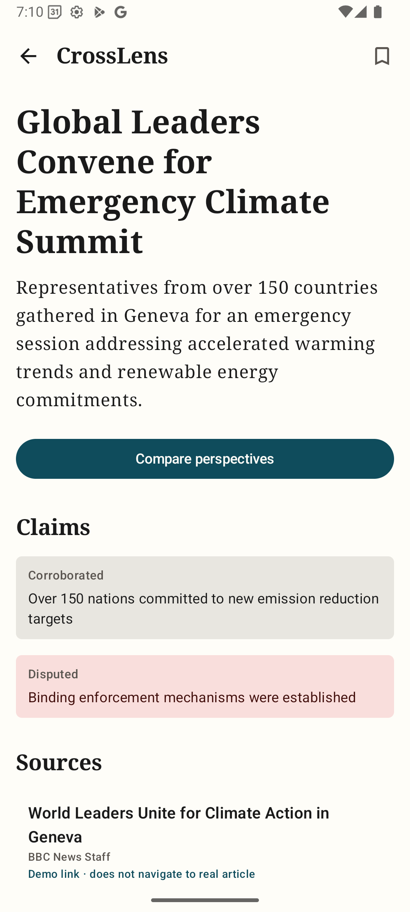
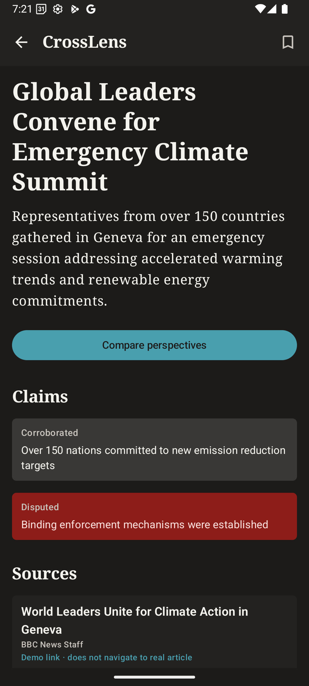
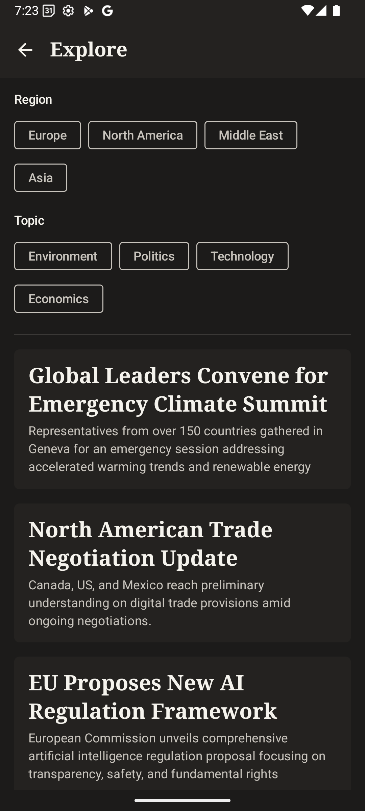

CrossLens lets you follow the same story across countries, languages, and institutions — side by side, with sources you can inspect.
Shared context
Every cluster in CrossLens represents a single real-world event — reported by sources across countries and languages. The Home feed shows you how many sources are covering it, which regions, and how widely perspectives differ.
Source coverage is grouped, not ranked. A country of origin is context for where a source publishes — it does not imply a single national viewpoint.

Inside a story
The Story screen separates the event summary from the claims made in reporting. Each claim is labeled: Reported, Corroborated, or Disputed — with links to the specific articles that support that assessment. Nothing is asserted without a source.
Comparison — CrossLens
The CrossLens screen places two source perspectives side by side around the same event. Original headlines, translated excerpts, and framing observations appear together — so you can see differences without having to leave the app.
Note: Frame observations are labeled with the analysis method and confidence level. CrossLens describes what it found in the sampled articles — it does not declare claims verified.
CrossLens Plus
Tap any source card to open the original article. Every translated headline is labeled with its source language, translation method, and the date the translation was generated. The original text is always one tap away.
Translation provenance
CrossLens preserves the original alongside the translation — and discloses whether a translation is human-reviewed, machine-generated, or unavailable. Missing translations fall back to the original with a visible explanation.
Claims & Evidence
A corroborated claim still needs evidence. An apparent omission means "not found in this analyzed sample," not proof of intentional suppression. CrossLens helps you inspect reporting — it does not replace your judgment.
Your Lens, Under Your Control
CrossLens Plus lets you surface more of what matters to you — by region, topic, or language. These preferences are stored locally on your device. They never alter the source evidence, editorial review decisions, or the underlying Lens Gap assessment.
Every preference is reversible. Resetting your settings never changes the reporting; it only changes what you see first.

The Lens Gap is CrossLens's measure of reporting divergence — not a factuality score. It evaluates differences in emphasized claims, actors mentioned, terminology, and the distribution of attention across sources. Each result discloses its sampled articles, geographic coverage, time window, and confidence limits.

Editorial Review — Demo
The Editorial Review screen is an offline prototype demonstrating how human editors will approve, reject, or defer ingestion candidates — including cross-language matches and syndication detection.
This is not automated fact-checking. Every review note is attributed and timestamped. The demo illustrates the intended workflow; no live editorial decisions are made in the current release.
Product Gallery
Access
Essential perspective
The full picture